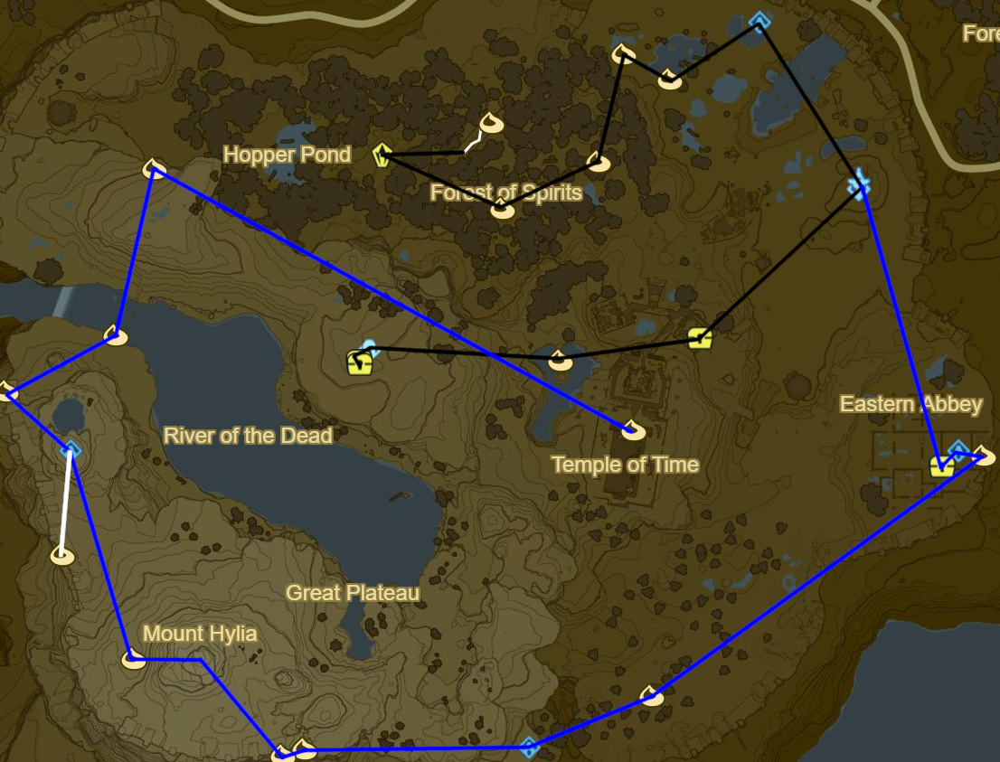

Great Plateau

Grab Well-Worn Trousers and Old Shirt
Exit Shrine of Resurrection
Korok 001: Dive into lily pads
Main Quest: Follow the Sheikah Slate
Grab Hylian Trousers from Temple Ruins
Great Plateau Tower
Main Quest: The Isolated Plateau
Oman Au Shrine (1/120)
Korok 002: Magnesis Stump SE of Oman Au
Korok 003: Rock under balanced rocks to NW
Korok 004: Rock under leaves to SW
Korok 005: Rock on hill to SW
Stone Talus to NW (1/40)
Korok 006: Flower trail to NE
Warp to Great Plateau Tower
Jai Baji Shrine South of Great Plateau Tower (2/120)
Nintendo Switch Shirt: DLC Chest outside Jai Baji
Korok 007: Rock beneath iron door, behind Jai Baji Shrine
Korok 008: Fairylights atop hut to SW
Head West across the ravine and use the small ledges to climb to Owa Daim Shrine (3/120)
Korok 009: Rock around corner of rampart SE of Mount Hylia
Korok 010: Rock under slab to W
Warm Doublet atop Mount Hylia
Korok 011: Rock Circle West of Mount Hylia
Continue NW to Keh Namut Shrine (4/120)
Korok 012: Ice block at end of rampart NW of Keh Namut Shrine
Korok 013: Under South side of bridge to NE
Korok 014: Magnesis Puzzle to NE West of Hopper Pond
Temple of Time
Main Quest: Destroy Ganon
Main Quest: Seek out Impa
Korok 015: Temple of Time Spire
Warp to Keh Namut Shrine
Korok 016: Magnesis Puzzle NW of Mount Hylia Down rampart
Warp to Oman Au Shrine
×